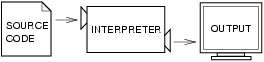
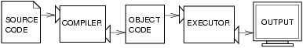

如何像電腦科學家一樣思考 | 1.程式之道

這本書的目標是要教你像電腦科學家一樣思考。這樣的思考方式結合數學、工程學及自然科學一些最優良的特色。電腦科學家像數學家，使用形式語言表達概念（特別是在計算方面）。他們也像工程師般設計東西，組合原件成系統，然後從中評估成本效益。他們還像自然科學家一樣，觀察複雜系統的變化，提出假說，並且測試所預期的結果。
電腦科學家最重要的一項能力就是解決問題。解決問題的意思是指能夠系統式地闡述問題，思考解決方法時別具創意，並且清楚正確地表達解決方法。結果證明，學習程式設計的過程是個練習問題解決技巧的絕佳機會。這也是為甚麼這一章叫做：程式之道。
從一方面來說，你將學會設計程式這個有用的技巧。對另一方面而言，你將利用程式設計作為工具，達成目標。隨著我們的教學，這目標會越來越清楚。
1.1 Python 程式語言
你將學習程式語言是 Python。Python 是高階語言的一種，你可能聽過的其他高階語言有 C++、PHP及Java。
你可以從高階語言這個名字猜測到，也有所謂的低階語言，有時也稱為機器語言或是組合語言。廣義來說，電腦只能執行用低階語言寫的程式。因此，用高階語言寫的程式在執行前必須先經過處理。這種額外的處理需要一些時間，這是高階語言的一個小缺點。
但其優點為數眾多。首先，用高階語言撰寫程式更容易。撰寫高階語言程式所需的時間更少，程式更短也更容易閱讀，而且正確性更高。其次，高階語言是可移植的，這表示它可以在經過些許修改後，運作在其他電腦架構上，有時甚至完全不需修改。低階語言程式只能運作在特定種類的電腦上，並且必須重寫，才能在其他的電腦上執行。
由於這些優點，幾乎所有的程式都是由高階語言來寫的。低階語言只用在一些專業應用程式上。
有兩種程式可以讓高階語言轉換成低階語言的，分別是直譯器和編譯器。直譯器讀取高階語言程式並執行它，這意味著直譯器直接執行程式的指示。它一次處理一點程序，交錯地讀取程式碼和執行計算。

編譯器則在程式開始執行前讀取程式並將其完全翻譯。在這種情況下，高階語言程式稱為原始碼，編譯後的程式則叫做目標碼或是執行檔。一旦程式編譯完成，你可以重複地執行，而不需進一步翻譯。

許多現代的語言同時使用兩種程序。它們先編譯到一種稱為位元碼的較低階語言，然後使用一個稱為虛擬機器的程式直譯。Python 同時使用兩種程序，但因其與程式設計師互動的方式，它通常被認為是一種直譯式許言。
有兩種方式使用 Python 直譯器：shell 模式及腳本模式。在 shell 模式下，你將 Python 陳述輸入 Python shell 中，直譯器會立刻印出結果來：
$ python
Python 2.5.1 (r251:54863, May 2 2007, 16:56:35)
[GCC 4.1.2 (Ubuntu 4.1.2-0ubuntu4)] on linux2
Type "help", "copyright", "credits" or "license" for more information.
>>> print 1 + 1
2
這個例子的第一行，是在 Unix 命令提示符下啟動 Python 直譯器的命令。下三行是直譯器提供的訊息。第四行以 >>> 起始，這是Python 提示符。直譯器使用這個指示符表示它已準備好接受指示。我們輸入 print 1+1，直譯器回應結果為 2。
另外，你也可以將程式寫入一個檔案中，然後利用直譯器執行檔案內容。這樣的檔案就叫做腳本。例如，我們使用文字編輯器建立一個名為 firstprogram.py 檔案，並包含下列內容：
print 1 + 1
傳統上，包含 Python 程式的檔案有著以 .py 結尾的名稱。
要執行這個程式，我們必須要告訴直譯器腳本的名稱：
$ python firstprogram.py
2
這些例子說明 Python 運作在 Unix 命令列的情形。在其他程式開發環境中，程式執行的細節可能會不一樣。另外，大多數的程式比這個例子有趣許多。
本書範例同時使用 Python 直譯器和腳本。你將可以分辨該使用哪一種方式，因為 shell 模式範例永遠以 Python 提示符起始。
在 shell 模式中工作可以方便測試簡短的程式碼，因為你可以獲得立即回饋。請將它想成用來幫你找出問題答案的便條紙。任何長於數行的程式都應該放到腳本中。
1.2 程式是什麼？
程式是一連串具體說明如何計算的指令。這種計算可能是數學的，像是找到方程組的解或是多項式的根，也可能是一種象徵性的計算，就像在文件中搜尋並取代文字，或（說來也奇怪）編譯一個程式。
不同程式語言的詳細情況看起來都不一樣，但有一些基本的指令，幾乎在每種程式語言中都可以發現：
輸入：
從鍵盤、檔案或是其他裝置取得資料；
輸出：
在螢幕上顯示資料，或著是將資料傳送到檔案或是其他裝置；
數學：
執行基本的數學運算，如加法和乘法；
條件執行：
檢查特定條件，並執行適當的陳述序列；
重複：
反覆執行某些動作，通常會有些變化。
不管你相信與否，就是這麼多了。你曾使用過的每個程式，不論有多複雜，都由或多或少類似的指令組成。因此，我們可以把程式設計當成是一種拆解的過程，將大型、複雜的任務，逐步分離成愈來愈小的子任務，直到這些子任務簡單到能使用這些基本指令執行為止。
這可能聽起來有點糊，當我們稍後討論到演算法時會再回到這個主題。
1.3 除蟲是什麼？
程式設計是一個複雜的過程，而且因為是由人類完成，所以常導致錯誤。為了一些奇怪的理由，程式設計的錯誤稱為蟲，而追蹤這些蟲，並修正的過程稱為除蟲。
程式裡有三類可能發生的錯誤：句型錯誤、執行錯誤以及語意錯誤。為了更快速地追蹤它們，清楚分辨這三種錯誤是很有用的。
1.4 語法錯誤（Syntax errors）
Python 只能夠執行語法正確的程式，否則程式就會執行失敗，並傳回錯誤訊息。語法就是指程式的結構，以及結構的規則。舉例來說，在英文中，句子一定是以大寫字母起始，並以句點為結束。下列例句就犯了英文的語法錯誤：「this sentence contains a syntax error.」。此句亦有語法錯誤，「So does this one」。
對大多數讀者來說，一些語法錯誤並不是個嚴重問題，這是為甚麼我們讀康明思（e. e. cummings）的詩卻不會吐出錯誤訊息。Python 則沒有這麼寬容。如果程式中任何地方有一個語法錯誤，Python 會印出錯誤訊息並結束程式。你將無法執行你的程式。在你程設生涯中最初的幾個星期，你大概會花很多時間追蹤語法錯誤。然而，當你的經驗增長，你將犯較少錯，並能更快地找到錯誤。
1.5 執行錯誤（Runtime errors）
第二種類型的錯誤叫做執行錯誤，會這麼命名是因為這種錯誤直到執行的時候才會出現。這種錯誤也稱為異常，因為它們通常表示某種異常（而且不好的）事情發生。
執行錯誤很少發生在頭幾章簡單的程式裡，所以你可能要等好一會才會遇到。
1.6 語意錯誤（Semantic errors）
第三種類型錯誤叫做語意錯誤。如果有語意錯誤在你的程式裡，程式仍會順利的執行，因此電腦不會產生任何的錯誤訊息，但是程式不會做正確的事情。程式還是會執行另一些事情，特別是你叫程式執行的事。
問題是你寫的程式並非是你想要寫的程式。程式的意義（它的語意）是錯的。判定語意錯誤可能是困難的，因為需要你檢視程式的輸出，並嘗試找出程式正在執行的事，以回溯你的工作。
1.7 實驗性除蟲
除蟲是你會獲得的重要技術之一。雖然除蟲工作可能令人沮喪，它卻是程式設計中最富機智、最具挑戰性以及最有趣的部份。
在某些方面，除蟲就像偵探工作一樣。你要依據得到的線索，推論出會導致所見結果的程序與情況。
除蟲也像是實驗科學。一旦你知道什麼出錯了，你修改你的程式並且再測試一次。如果你的假說是對的，你就可以預期修改的結果，並能更接近可以運作的程式。但如果你的假說是錯的，你就必須想出一個新的假說。就像夏洛克．福爾摩斯指出的：當你排除不可能的，剩下的即使不太可能，那也必定是真相。（柯南．道爾，四個人的簽名）
對有些人來說，程式設計與除蟲是同一件事。也就是說，程式設計就是逐步除蟲的過程，直到程式執行你想要的事。這個概念是說，你應該以一個可執行某件事的程式開始，然後在除蟲的過程中進行些微修改，好讓你永遠有個可運作的程式。
舉例來說，Linux 是個包含著數千行程式碼的作業系統，但是它最初只是個 Linus Torvalds 用來探索 Intel 80386 晶片的簡單程式。依據 Larry Greenfield 所說，Linus 早期的計畫是個將螢幕印出的 AAAA 變成 BBBB 的程式。這個程式稍後演變成為 Linux。（The Linux Users' Guide Beta Version 1）
往後的章節會提供更多除蟲及其他程設實務的建議。
1.8 形式語言及自然語言
自然語言是人們所講的語言，如英語、西班牙語和法語。它們並非是由人所設計的（雖然人們嘗試將某種規則套用在它們上面），而是自然演變而成。
形式語言是人們為特定應用所設計的語言。舉例來說，數學家所使用的標記法就是一種形式語言，這種語言特別適合表示數字與符號間的關係。化學家也使用一種形式語言表現分子的化學結構。最重要的是：
程式語言是設計來呈現計算的形式語言。
形式語言對於語法有嚴格的規則。例如，3+3=6 是一個語法正確的數學陳述，但 3=+6$ 不是。H2O 是語意正確的化學名稱，而 2Zz 則否。
語法規則分為兩種，分別屬於 標記與結構。標記是程式語言的基本元件，就像字詞、數字和化學元素等。3=+6$ 的問題之一是 $ 並非數學的正確標記（至少就我們所知道的來說）。同樣的，2Zz 也不正確，因為沒有一種元素的縮寫是Zz。
第二種語法規則屬於陳述的結構---也就是說，標記的排列方法。3=+6$ 這個陳述的結構不正確，因為等號不能馬上接加號。同樣的，分子式的下標必須在元素名稱的後方，而非前方。
當你閱讀英文句子或是形式語言的陳述，你必須去理解句子的結構是什麼（雖然在自然語言裡，你會下意識地理解）。這種過程稱為分析。
舉例來說，當你聽到 The other shoe fell 這個句子，你就能暸解 the other shoe 是主詞， 而 fell 是動詞。一旦你分析了一個句子，你可以理解它的意義是什麼，或說是這個句子的語意。假設你知道「shoe」是指什麼以及「fall」的意義，你就能瞭解這個句子大致上的含意。
雖然形式語言和自然語言有許多相同特徵標記、結構、語法和語意它們依然有許多相異之處：
歧義性：
自然語言充滿著歧義，人們總是利用上下文的線索和其他資訊來理解。形式語言設計成近乎完全或是完全消除歧義性，這就是說不管上下文的內容為何，每個陳述都正好只有一個意義。
冗贅性：
為了彌補歧義以及減少誤解，自然語言使用了大量贅詞。結果使得自然語言往往非常冗長。形式語言則有較少贅詞，並且更簡潔。
字面性：
自然語言充滿成語和隱喻。如果有人說，The other shoe fell，則可能沒有鞋子也沒有任何東西掉落。形式語言的字義則精確地相符。
在成長時使用自然語言的的人們---也就是說，每個人---常在適應形式語言時遭遇困難。在某些方面，形式語言和自然語言間的差別就像詩及散文，更進一步來說：
詩歌：
文字使用音義並重，整首詩合起來產生一種意義或著是情緒呼應 。歧義性不僅普遍，而且常是刻意營造。
散文：
字面意義較為重要，但是文章結構提供了更多含意。散文比詩歌更容易解析，但仍常有歧義。
程式：
電腦程式不會有歧義，可以照字面了解，並且能夠經由分析標記與結構而完全理解。
以下是閱讀程式（及其他形式語言）的建議。首先，記得形式語言的結構比自然語言更為緊密，因此需花較多時間閱讀。另外，結構是非常重要的，所以從頭讀到尾，從左讀到右不見得是個好方法。相反地，你要學著在心裡分析程式，也就是辨認標記並且轉譯結構。最後，細節是非常重要的。像是拼寫或標點錯誤這種小事，在你使用自然語言的時候能夠略過，但在形式語言中可能造成極大的不同。
1.9 第一個程式
傳統上，使用一個新語言所撰寫的第一個程式稱為 Hello, World!，因為這程式只會顯示 Hello, World! 文字在螢幕上。在 Python 中，這個程式看起來像這樣：
print "Hello, World!"
這是一個 print 陳述的例子，它並不會真的印什麼東西在紙上，而是在螢幕上印出一個數值。在這個例子中，結果就是下列文字：
Hello, World!
程式裡的兩個雙引號標示該數值的起迄點，它們不會出現在結果中。
有些人以 Hello, World! 程式的簡潔性，來判斷一種程式語言的品質。以這個標準來看，Python 幾乎做到了盡善盡美。
1.10 術語
演算法（algorithm）：
解決一種問題的大致步驟。
臭蟲（bug）：
程式裡的錯誤。
位元碼（byte code）：
介於原始碼與目標碼的中介語言。許多現代程式語言會先編譯原始碼到位元碼，然後使用一個稱為 虛擬機器 的程式直譯位元碼。
編譯（compile）：
把用高階程式語言寫的程式整批翻譯成低階語言，以利稍後執行。
除蟲（debugging）：
找到及移除三種程式設計錯誤的過程。
異常（exception）：
執行錯誤的另一個名稱。
執行檔（executable）：
可執行目標碼的另一個名稱。
形式語言（formal language）：
人們為了特定目標而設計的任何語言，如呈現數學想法或是電腦程式；所有的程式語言都是形式語言。
高階語言（high-level language）：
一種設計成讓人容易讀寫的程式語言，如 Python。
直譯（interpret）：
以一次翻譯一行程式碼的方式執行高階語言程式。
低階語言（low-level language）：
一種設計成讓電腦容易執行的程式語言，也稱為 機器語言 或 組合語言。
自然語言（natural language）：
人類所講的任何一種自然演變的語言。
目標碼（object code）：
編譯器翻譯程式後的輸出結果。
分析（parse）：
檢查程式並分析語法結構。
移植性（portability）：
一種能運作在多種電腦的程式特性。
print 陳述（print statement）：
一個使 Python 直譯器在螢幕上顯示數值的指令。
解決問題（problem solving）：
闡述問題，找到解決方法，並表達解決方法的過程。
程式（program）：
一連串詳細說明電腦活動及執行計算的指令。
Python shell：
Python 直譯器的互動式使用者介面。Python shell 的使用者在提示符號（>>>）後輸入命令，按下 return 鍵直接傳送這些命令到直譯器處理。
執行錯誤（runtime error）：
直到程式開始執行時才發生的錯誤，這種錯誤會阻止程式繼續執行。
腳本（script）：
儲存在一個檔案中的程式（通常是直譯式的程式）。
語意錯誤（semantic error）：
一種程式中的錯誤，使該程式執行程式撰寫者預期外的事情。
語意（semantics）：
程式的意義。
原始碼（source code）：
在編譯前的高階語言程式。
語法（syntax）：
程式的結構。
語法錯誤（syntax error）：
一種使程式不能分析的錯誤（也因而不能直譯）。
標記（token）：
程式語法結構中的基本元素，與自然語言中的字詞類似。
1.11 練習
1.
寫出一個語法錯誤，但語意可理解的英文句子。寫出另一個語法正確，但有語意錯誤的句子。
2.
啟動 Python shell。鍵入 1 + 2 按下 return 鍵。Python 計算這個表達式，印出結果，接著印出另一個提示符號。* 是 乘法運算子, 而 ** 是 乘冪運算子。試著輸入不同的運算式，並且記錄 Python 直譯器印出什麼。如果你用 / 運算子會發生什麼事情？結果是你預期的嗎？解釋看看。
3.
輸入 1 2 並按下 return 鍵。Python 試著計算這個表達式，因為這個表達式語法不正確，因此無法計算。取而代之的，Python 會印出錯誤訊息：
File "
1 2
^
SyntaxError: invalid syntax
在許多情況下，Python 會指出語法錯誤發生的地方，但並非每次都是正確的，而且它並不會給你多少關於該錯誤的訊息。因此，大部分都要靠你學習語法規則解決。
在這個例子中，Python 抱怨的原因是兩個數字中間沒有運算符號。
寫下另外三個輸入 Python 後，會產生錯誤訊息的字串。解釋各個例子為何不是有效的 Python 語法。
4.
鍵入 print 'hello'。Python 執行這個陳述，結果是將字母 h、e、l、l、o 印出。請注意你用來包住字串的雙引號，並不是輸出結果的一部分。
現在，輸入 print '"hello"'，然後描述並解釋你的結果。
5.
輸入不包含雙引號的 print cheese。輸出結果會像是這樣：
Traceback (most recent call last):
File "
這是一個執行錯誤，確切地說，這是個 NameError，說得再具體一點，錯誤的原因是 cheese 這個名稱沒有定義。如果你還不知道這是什麼意思，你很快地就會暸解原因。
6.
在 Python 提示符後輸入 'This is a test...' 並按下 enter。記下結果。現在用以下內容建立一個名為 test1.py 的 Python 腳本（請確定在你嘗試執行前已儲存檔案）：
'This is a test...'
當你執行這個腳本時發生了什麼事？現在改變腳本的內容如下：
print 'This is a test...'
再執行一次。這次發生了什麼？
無論何時在 Python 提示符後輸入 表達式，Python 都會 計算 該表達式，然後把結果印在下一行。'This is a test...' 是一個求取 'This is a test...' 數值的表達式（就像 42 是個求取 42 數值的表達式）。然而，在一個腳本中，表達式的計算不會傳送至輸出結果，所以必須將它清楚地印出。
You may be interested in the following articles:
- 如何像電腦科學家一樣思考 |14. 類別與方法 - 2009-08-06
- 如何像電腦科學家一樣思考 |13. 類別與函數 - 2009-07-10
- 如何像電腦科學家一樣思考 |12. 類別與物件 - 2009-06-12
- 如何像電腦科學家一樣思考 |11. 檔案和例外 - 2009-05-05
- 如何像電腦科學家一樣思考 |10. 模組和檔案 - 2009-04-05
- 如何像電腦科學家一樣思考 | 9. Tuple - 2009-03-14
- 如何像電腦科學家一樣思考 | 8. 案例研究： Catch - 2009-01-15
- 如何像電腦科學家一樣思考 | 7. 字串 - 2008-12-10
- 如何像電腦科學家一樣思考 | 6. 重複 - 2008-11-09
- 如何像電腦科學家一樣思考 | 5. 多效函數 - 2008-10-12
- 如何像電腦科學家一樣思考 | 4. 條件式 - 2008-08-10
- 如何像電腦科學家一樣思考 | 3. 函數 - 2008-06-27
- 如何像電腦科學家一樣思考 | 2. 變數、表達式及陳述 - 2008-05-22
- 如何像電腦科學家一樣思考 - 2008-04-25